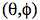
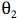

Omni-directional Stereoscopic Fisheye Images for Immersive Hemispherical Dome EnvironmentsWritten by Paul Bourke
Proceedings of the Computer Games & Allied Technology 09 (CGAT09),
Research Publishing Services, ISBN: 978-981-08-3165-3, pp 136-143.
AbstractIn the following I discuss and derive the optical requirements for stereoscopic projection into hemispherical domes, this is applicable to both large scale planetariums and smaller personal domes. It is the development of the later smaller domes, referred to as the iDome, that employ a new lower cost projection system [Bourke 2005] that has been the motivation for this work. Primarily the discussion focuses on how to create optimal omni-directional stereoscopic fisheye pairs, that is, stereoscopic projections that are largely view direction independent. These have some interesting differences and challenges to the usual planar perspective pairs encountered in systems comprising of flat display panels. Keywordsstereoscopy, virtual reality, immersive gaming, fisheye, planetarium, hemispherical dome, projection Presentation slides in pdfPDF version of paper (Note: there are errors in the equations on page 3, correct in the web version below).
IntroductionStereoscopic projection is a well established and increasingly commodity based technology that exploits the fact that our visual system consists of two eyes. If our two eyes are presented with a correctly formed image pair, otherwise known as a stereoscopic pair, of a synthetic scene then we can experience the similar depth perception of the virtual world as we do in the real world. Our visual system has another characteristic not usually engaged by standard computer displays, namely a very wide horizontal field of view and to a lesser degree a tall vertical field of view. It is this field of view if stimulated with the correct projections of a virtual 3 dimensional environment that gives us a stronger sense of presence, that is, of being in the virtual environment. This is largely due to the absence of any visual cues that anchor us to the real world, for example, no frame around the projection plane. A natural question then is how might one combine these two characteristics of our visual system in order present a virtual environment with an even stronger sense of "being there" than the two techniques can offer individually. There have been various attempts over the years to deliver this but they have generally suffered from various issues and/or limitations: many are exceptionally expensive and thus only available to large institutions; some are based upon partial cylindrical displays that don't engage our entire horizontal field of view or more commonly don't engage our entire vertical field of view; others have unfortunate viewing restrictions. Stereoscopic projection onto flat screen surfaces is correctly computed by considering the position of the viewer and the screen surface, which in computer graphics vocabulary, is referred to as the projection plane. In order to determine the colour at any pixel one imagines a line from the eye (or virtual camera) through the corresponding position on the projection plane. In a stereoscopic system this is performed for each eye, see figure 1a, resulting in an image for each. Fundamental to any stereoscopic system is the reality that the view is only strictly correct from a single position. If the viewer moves or turns then the vector from each eye through a pixel on the projection plane changes thus potentially changing the value at that pixel, see figure 1b. This leads to the requirement of head tracking and as a consequence a single user experience for a truly correct stereoscopic experience. In practice and in many applications such precisely correct perception isn't necessary. The distortions (shears and stretching) induced if the observer is not located in the exact position for which the stereoscopic pairs are created does not necessarily detract from the experience or 3D sensation. This is often the case if the observer is at least stationary (seated in an theatre), it can be more of a concern if they are in motion such as in an active virtual reality environment.
There are significant benefits to be gained by crafting stereoscopic image generation and projection in order to reduce visual discomfort [Lambooij et al 2007]. There are factors related to the projection hardware such as the degree of ghosting inherent in the technology that attempts to preclude one eye from seeing the image destined for the other eye. There are content based issues that can cause eye strain such as extreme negative parallax. Finally, there are characteristics relevant to the means or algorithms by which the stereoscopic image pairs are generated or captured. Examples of this last category include the introduction of vertical parallax or the choice of eye separation. When considering stereoscopic environments that also have a wide field of view there are often approximations involved in the generation of the stereo pairs and it is these that can induce additional strain on the visual system if the stereoscopic pairs are not created optimally. Omni-directional stereoscopic cylindricalStereoscopic displays do exist that provide a satisfactory stereoscopic experience without requiring head tracking. These are generally referred to as omni-directional (Ben-Ezra et al 2001] displays and the most common are cylindrical screens which in some cases cover 360 degrees and totally surround the observer. The cylindrical projections created for these environments are called stereoscopic panoramic pairs [Bourke 2006]. They give a single user the ability to look in any direction without head tracking. An immediate consequence of this is that the display can additionally support multiple participants each looking in a different direction. As with planar displays the stereoscopic view is only strictly correct from a single position, normally the center of the cylinder on which the imagery is projected, but in practice there is a larger region where the distortion and parallax errors induced by moving away from the central spot are not an issue. Even for an individual in an omni-directional stereoscopic environment, the stereoscopic information presented to the eyes is increasingly incorrect towards the edges of the observers field of vision. This must be the case because, for example, the parallax of the imagery at 90 degrees to the viewers current view direction should be 0 but that is not the correct parallax for another observer looking in that perpendicular direction. This is not generally an issue and doesn't induce serious eye strain because of the limited field of view imposed by the stereoscopic eye-wear. The observer may still see imagery in their peripheral region but our visual system doesn't acquire a stereoscopic sensation in that region. Note that the sense of immersion arising from our peripheral vision still exists as long as the eye-wear doesn't wrap around and block the imagery in the peripheral region. Stereoscopic fisheyeA number of immersive environments are based upon hemispherical domes, these range from planetariums designed for a large number of people, to smaller single person domes. In both cases there is the opportunity to exploit the depth sensation arising from stereoscopic images in conjunction with making full use of peripheral vision. This can be beneficial for a number of reasons, such as increased engagement for entertainment or educational content or enhanced understanding in the case of serious gaming or visualisation. In the case of a planetarium there are multiple viewers all of whom need an acceptable stereoscopic experience. In this discussion it is assumed that the seating and dome orientation in the planetarium is such that the audience is essentially all looking in a similar direction. This is the most common arrangement for a modern digital planetarium, the older style arrangement with concentric seating is more problematic for any stereoscopic experience, requiring a variation of the omni-directional stereoscopic cylindrical projections rather than the fisheye projections discussed here. For a smaller personal dome such as the iDome (see figure 6) the single operator needs to be able to look in any direction. In both the directional planetarium and the personal dome the viewing requirements are met by omni-directional fisheye images.
A number of algorithms can be imagined and indeed have been proposed to create stereoscopic fisheyes for hemispherical dome projection. The simplest is to horizontally offset two standard fisheye projections and rotate the virtual camera view direction such that zero parallax occurs at the correct distance along the view direction, see figure 2. This has the pitfall that the full 180 degree field of view doesn't match at the edges between the two cameras. One solution to this is to over render the fisheye and rotate the images to give full 180 degree coverage for each eye. The additional problem is the lack of correct parallax information as one looks away from the central view direction. In the extreme case there is no parallax information for views perpendicular to the central view direction. An alternative is to employ a so called off-axis fisheye projection [Salamon 2006], see figure 3. Off-axis fisheye projections are most commonly used to give an undistorted view within a dome for an observer not located at the center of the dome. Stereoscopic fisheye projections formed this way give a satisfactory depth sensation for an observer looking "forward". However for both this and the earlier toe-in approach there is a difference in scale for objects as they move horizontally towards the edges of the dome and a decrease in parallax information. For example an object on the right will appear larger in the right eye image than the left eye image because it is closer to the right eye. This isn't critical for an observer looking forward since the peripheral region isn't being focussed on and yet it still provides satisfactory peripheral cues, such as motion cues. But it is important if the viewer looks in other directions. This approach can be used successfully in simulators where the operator is predominantly fixated in a forward direction.
Omni-directional stereoscopic fisheyeThe omni-directional stereoscopic fisheye geometry described here is similar to the approach employed for stereoscopic cylindrical projections. The eye positions are rotated about the up vector so as to mimic the way an observers eye axis rotates when looking around within a hemispherical dome, see figure 4. It can be appreciated that with this approach correct parallax information is maintained at any localised area on the display surface. As with cylindrical stereoscopic panoramic image pairs it is exactly correct for any view direction in the middle of the field of view and it degrades away from the middle. As discussed earlier this degradation is generally not problematic since it is hidden by the limited field of view of whichever eye-wear is employed: polaroid, shutter LCD, or Infitec glasses. It is exactly this effect that makes an omni-direction viewing experience even possible, including the support for multiple simultaneous participants each looking in different directions. In order to create omni-direction stereoscopic fisheye images the derivation requires the calculation of the position of each camera (Pc) and the ray vector (Pr) for any pixel in the fisheye image plane. The standard camera space coordinate system used here and the conventions for the fisheye image plane are given in figure 5. In the camera coordinate system the center of the viewer is assumed to be located at the origin and looking down the positive z axis. The two eyes are offset along the positive (right eye) and negative (left eye) x axis. For a pixel (i,j) in image space the normalised coordinates (xo,yo), where each ranges from -1 to 1, are simply given as follows where W and H are the width and height of the fisheye respectively and for a circular fisheye are normally equal. y = 2j/H - 1
Polar coordinates  corresponding to the normalised (x,y) image plane position for a 180 degree fisheye projection are as follows
The ray corresponding to this pixel for a standard fisheye projection is simply
Normally (but not a requirement) the point is not considered if (x2 + y2)1/2 > 1, that is, the point in the normalised image plane lies outside the unit circle. If R is the radius of the hemispherical dome projection surface and E the eye (camera) separation then the vector into the scene for the off-axis fisheye arrangement is given by
The camera position is fixed and not a function of fisheye pixel position.
For the proposed omni-directional fisheye projection the vector into the scene is given by
Where  is the angle to the x axis of the projection of pixel position ray Po onto the x-z plane, namely
The camera position is now dependent on the fisheye pixel position and given by
It is outside the scope of this paper to discuss in detail the software issues related to the production of such projections. For rendered content the simplest approach is the modification of a raytracer as this only requires the calculations outlined above for the equation of a ray from either eye/camera through each pixel in the fisheye image. Realtime APIs such as OpenGL require techniques similar to those required for stereoscopic cylindrical projections. One approach is to create a number of thin tall perspective projections from each camera as it is rotated and then stitch/blend the slices together. This multi-pass algorithm can obviously be computationally demanding since a good approximation requires a large number of rendering passes. An alternative is to employ a vertex shader to adjust the geometry in just the right way so as to give the correct result when finally rendered with a single orthographic camera render pass. Unfortunately in a non-linear projection such as this a line between two vertices is not a "straight" line in the image buffer. As such lines and planes that have reasonable spatial extent need to be tessellated in order for the vertex shader to act upon the smaller line or planar sections. This tessellation generally needs to be performed on the CPU resulting in significantly more geometric data being sent to the GPU.
ResultsThe techniques and algorithms discussed here have been tested on a personal iDome. Two projection technologies have been employed for the evaluation. One is based upon a high end digital projector capable of generating a 120Hz frame sequential (time multiplexed) stereoscopic projection of the type suitable for traditional LCD shutter glasses, see figure 6a. Such a projection system gives flicker free full colour images. The techniques have also been tested with anaglyph (red/cyan) techniques, see figure 6b. This is not capable of good colour fidelity but is at least capable of being projected with standard commodity range projectors. Considerable effort has been taken to judge whether the depth cues are correct irrespective of the viewing direction of the observer.
A comparison of the algorithms can be seen in the images given in figure 7,8, and 9 which shows a superimposed left and right eye image from the same view direction for each of the three algorithms discussed. Figure 7 represents the toe-in fisheye pair and the significant parallax distortion that occurs at the top and bottom of the image, most apparent in the incorrect parallax towards the north pole. It suffers from the same parallax errors and scaling errors on the left and right as the off-axis algorithm. Figure 8 shows the same view but for an off-axis stereoscopic pair. The parallax decreases towards the left and right sides giving an incorrect sense of depth if the observers head were to turn towards those regions. Compare the parallax in these regions with the omni-direction fisheye stereoscopic pairs as shown in figure 9. This is the only solution that exhibits acceptable depth perception irrespective of the viewing direction of the observer.
ConclusionThis paper has introduced the concept of an omni-directional fisheye for creating stereoscopic fisheye pairs, that is, stereoscopic fisheye projections which when viewed within a hemispherical dome allow the user to look in any direction and get the appropriate depth perception. It additionally supports multiple observers each looking in different directions within a planetarium. The constraint is that the sense of "up" must be constant, not generally a serious limitation for typical applications with a user within small single person dome or multiple, generally seated, audience within a directional planetarium configuration. The geometry and ray equations have been derived and the results have been evaluated within a small 3m upright dome using frame sequential shutter glasses based projection, as well as anaglyph images. The techniques as implemented in POVRay have been made publicly available and agree with the expected behaviour for each technique and, in particular, the omni-directional algorithm gives correct depth cues across all viewing directions. Acknowledgement to Nathan O'Brien for the 3D model of the Redentore cathedral used for the illustrations in this paper and to test the modified raytracing code that implements the various algorithms presented. ReferencesBOURKE, P.D. 2005. Using a Spherical Mirror for Projection into Immersive Environments. Graphite (ACM Siggraph). Proceedings of the 3rd international conference on Computer graphics and interactive techniques in Australasia and South East Asia. pp 281-284. BEN-EZRA, M., PRITCH, Y. PELEG, S. 2001. Omnistereo: Panoramic Stereo Imagine. IEEE Transactions on Pattern Analysis and Machine Intelligence. Vol.23, No.3, pp.279-290, March, 2001. LAMBOOIJ, M.T.M., IJSSELSTEIJN, W.A., HEYNDERICKX, I. 2007. Visual Discomfort in Stereoscopic Displays: a review. Proceedings Electronic Imaging, Stereoscopic Displays and Virtual Reality Systems XIII, SPIE Vol 6490, 64900I. BOURKE, P.D. 2006. Synthetic Stereoscopic Panoramic Images. Lecture Notes in Computer Science (LNCS), Springer, ISBN 978-3-540-46304-7, Volume 4270/2006, pp 147-155. SALAMON, D. 2005. Transformations and Projections in Computer Graphics. Springer London, pp 145-220. DOI: 10.1007/978-1-84628-620-9. Zhang, Z., McAllister, D.F. 2006. A Uniform Metric for Anaglyph Calculation. Proceedings Electronic Imaging, Stereoscopic Displays and Virtual Reality Systems XIII, SPIE Vol 6055, 605513. | ||||||||||||||||||||||
{kind=link}
{kind=link}
{kind=link}
{kind=link}
{kind=link}